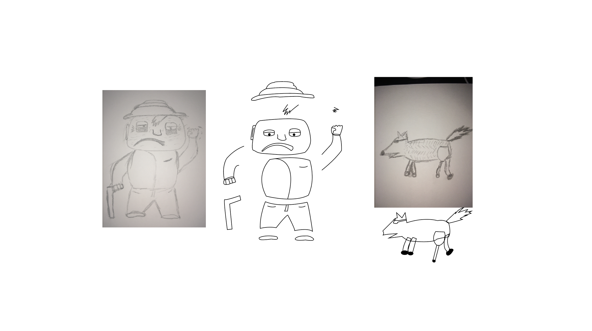
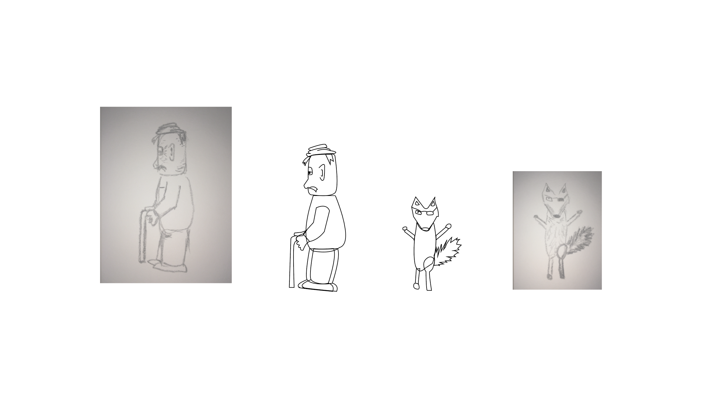
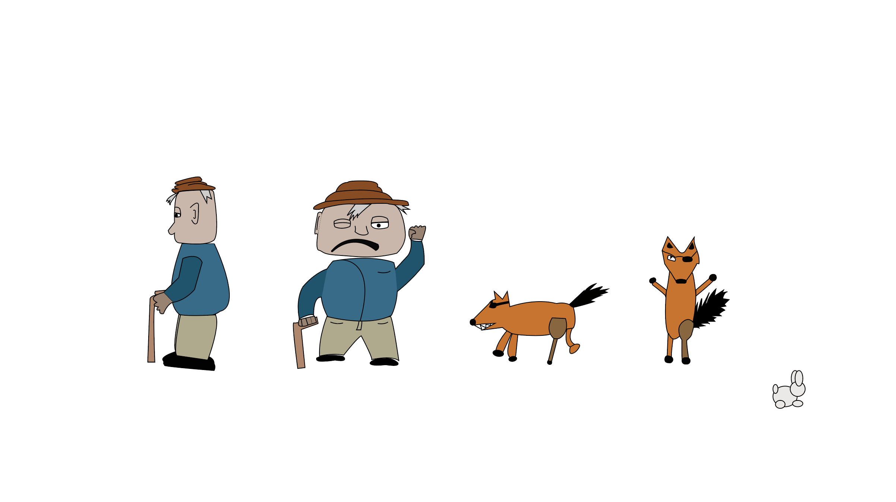
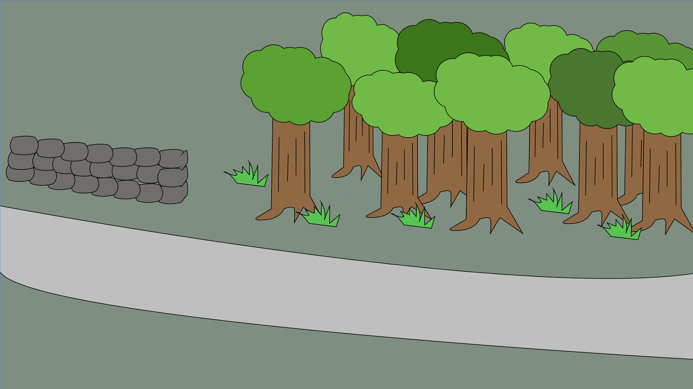

Her er en samling screen dumps af mine skitser til vores animationsprojekt
- Alle tegnet med pentool i Illustrator
02.01.02 Karakterdesign og skitser
 02.01.03 Rentegnede karakterer og scenografi
 02.03.01 Lydsiden
Desværre kom jeg ikke længere end ovenstående rentegning.
02.03.04 Den færdige fortælling med dokumentation
Jeg blev aldrig færdig med min animation og kan derfor ikke vise jer det endelige produkt.